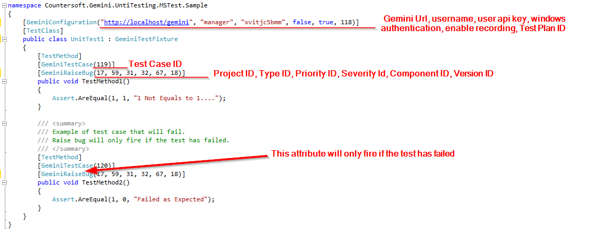

Gemini allows developers to report unit test execution results to their relevant test cases in Gemini.
Download the unit testing sample and open the project in Visual Studio under the Extras\UnitTesting folder.
Make sure you have derive from GeminiTestFixture for the integration to work and ensure you have enter the correct test case id in GeminiTestCase attribute.
Also make sure you have entered the correct project, type, priority, severity, component and version ids in GeminiRaiseBug attribute.
